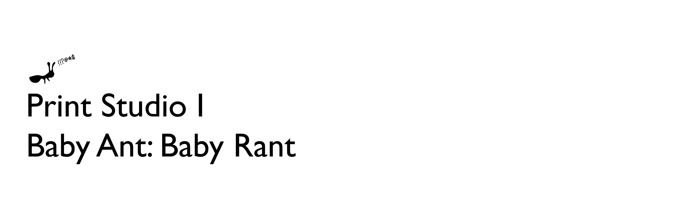
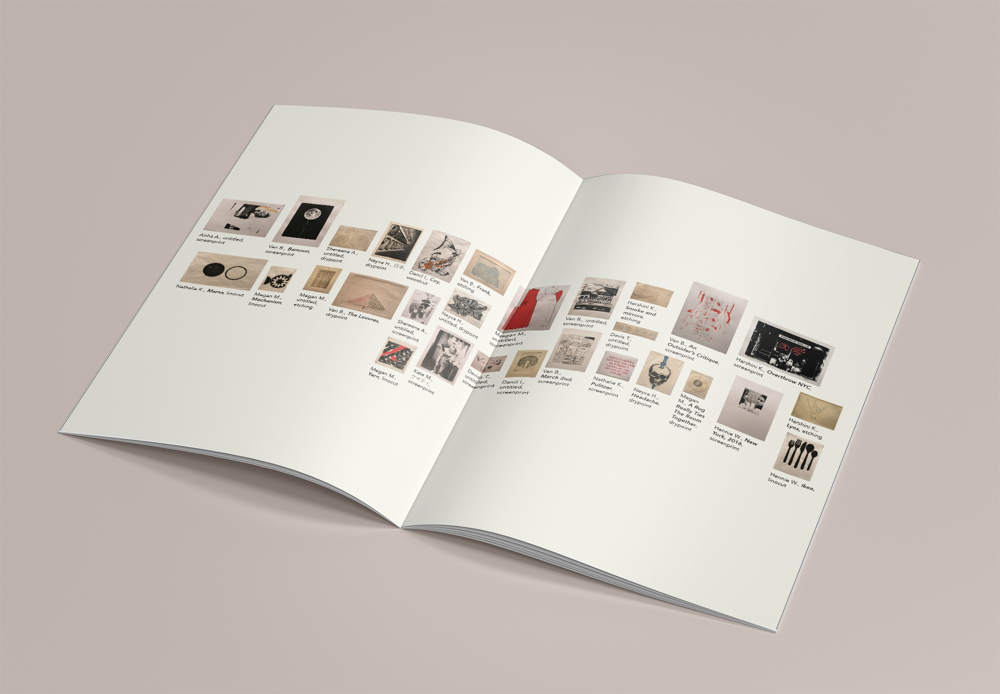
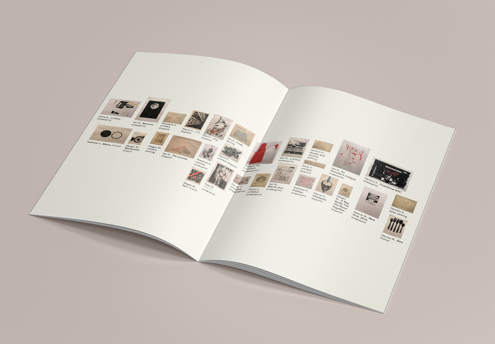
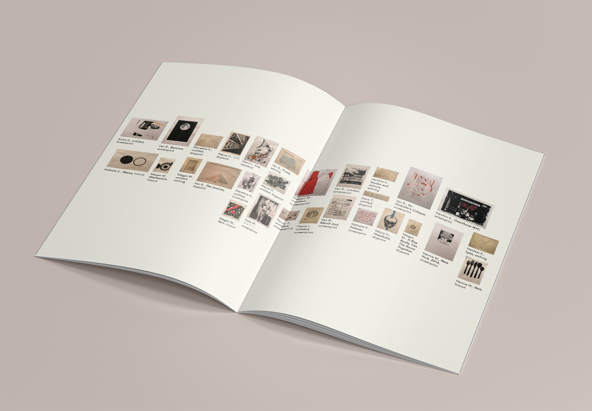

The end-of-semester printmaking show is one of the most anticipated showcases in the Arts Center at NYUAD. The first Printmaking class has named the print archive “Baby Ant”, a name as mysterious and fun as the professor, the students, and the class content themselves. For the second Printmaking show, our class decided to carry on with “Baby Ant”, but also added something of our own: “Baby Rant.”
Apart from the rhyme, this name was chosen because there really were a lot of rants throughout the semester. In such a process-heavy class like Printmaking, any little problem can cause the whole schedule to be delayed. However, despite all the issues with the printing press, the felt, the paper, etc., we have all pulled through and put up an amazing show. No other name can sum up our whole semester as well as “Baby Rant”.
In Spring 2017, one of NYUAD's best Printmakers, Pedro, created the logo for the Baby Ant Archive – of course, a tiny little ant. In order to give some rants to this cute ant, I only added a few nonsense marks. This simple addition suddenly gave our ant some cute angriness, while maintaining the original logo mark. I believe that with the ant of the first Print exhibition and the cursing ant of the second, an identity for the following exhibitions has been naturally established – an ant that can shape-shift into anything that the current class themselves are.

 


